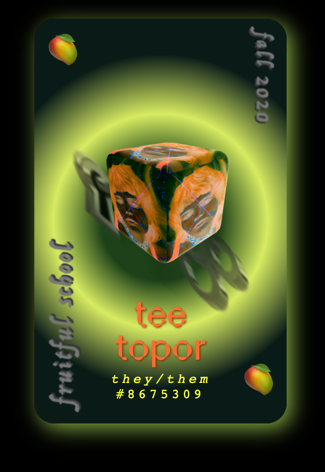

Icky Gooey Heart
Interview with Tee Topor, Fall 2020 Participant
What’s your site?
The ickygoohe.art was a breakup site I made when the wounds were still pretty raw, mid-pandemic. I was lonely and sad, and I needed somewhere to store my overflowing emotions. The internet seemed like a good place for that.
The term “icky gooey heart chamber” comes from a conversation I had with a friend when we were both gushing about our toxic love lives. We commented on how gross falling in love actually is, contrary to its fetishization. When I think of hearts, I initially think of the plush fuzzy ones teddy bears hold. But in reality, the heart is probably pretty slimy and gooey, and the sight of one out of body is really macabre. The uncanny image of a physical heart elicits an aura of mystery. I liked the idea of making each webpage a different mysterious chamber where I could tuck away purged personal memories. It’s not what a typical website looks or feels like, and I really wanted to push that uncanny phenomenon.
What was the process of creating like?
One of the first pages I made for the site was based on a reflection I had during an insomnia episode. I had a vision of putting all the sweet memories with my late ex in a coffin, setting it on fire, and pushing it into the abyss. So I literally did that (in CGI), and it made me feel much better. From there, the other pages fell into place as I was thinking about the site like a game with different levels. How could the visitors of the site get from one page to the next without losing interest? Many of the elements, like the navigation buttons, I designed in a 3D modeling program called Cinema 4D. Sometimes the coding trick I wanted to try would inform what I ended up illustrating. Other times, I would illustrate something and then figure out how to lay it out on the page with code.
Making this site was special because a lot of the things I attempted to make were with skills I really struggled with months before. When I would sit down and figure stuff out, it was really empowering and helped me regain confidence in myself.
One of the first things John & Laurel talked about was how webpages can be interactive digital art books. I really like that approach for designing for the internet. So often people make the mistake of teaching a skill without the context of how that skill can be applied in a meaningful way. A lot of the websites that came out of our fruitful cohort were great because everyone already had an idea of the story they wanted their site to tell. It was really encouraging to have a group of people to sort of hold you accountable for carrying out your creative vision. I learned that I love HTML & CSS, and that both are totally underrated. You can do so much with both, without a complicated back-end or fancy frameworks, and still have very abundant websites.
I feel like learning to make websites is like climbing a really tall ladder into the clouds. It’s slow, you have to start at the bottom, and it’s more about the ascension than actually reaching an ending. You have to let the ideas guide you.
What's something you'd like visitors to your site to know that they wouldn't otherwise?
There are little glimpses of me and my digital art everywhere on the site. Retrospectively, I think I may have hidden stuff too well. Something I would want to tell visitors, just keep clicking around or hovering over stuff and eventually you might find something kind of cool. There is actually a guest book on one of the pages that remains unsigned. It’s hidden under a love letter on the page where you can see yourself on the computer. I was hoping people would screenshot themselves on the page and put it in the guest book with mine so I would feel less alone. ̄\_(ツ)_/ ̄
Since some time has passed, have you had any new feelings / thoughts / reflections about your site now, looking back?
The site is pretty emo, so when I look back at some of the stuff I put in it and myself in that moment, I’m like ugh, this is kind of embarrassing how dramatic I was or how upset I got over this lame person. It’s like seeing an awkward photo of yourself with an out-of-style haircut and feeling like a huge nerd. I guess there is something kind of nice about that though. Post fruitful school, I’ve been practicing my web development skills, and I would love to revisit the vessel of a heart as a web page and go more in depth. Ideally, I want to make a collaborative version where other people can contribute their own intimate memories.
What type of website would you like to experience more in the future?
Obviously, I want more mystery on the web. We have these set expectations of the experience that we’ll have behind the screen when we visit a URL. I’m interested in websites that break those expectations, that take time for visitors to understand. I want to revisit webpages and discover new things. I want more websites that feel like digital worlds. I want to spend as much time on handmade sites as I do now on social media. Most interactions I have on social media seem disingenuous and I want to see more people using the webpage as a medium for expressing themselves honestly.
🥭
Tee Topor
https://teeaze.world
